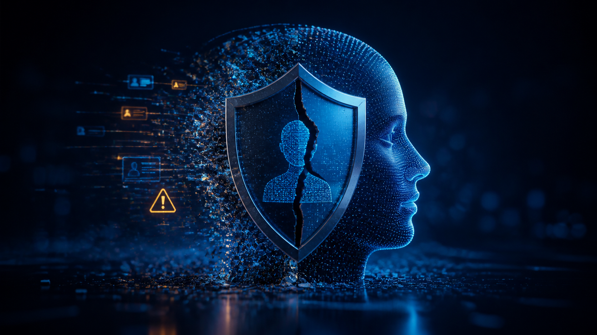

Financial fraud and scam networks
Connect customer protection, fraud operations and technical controls before a compromised account becomes a payment event.
Casework themes
The examples below are anonymised, drawing on public-facing themes while protecting investigations, victims and partner agencies.
Connect customer protection, fraud operations and technical controls before a compromised account becomes a payment event.

Layered verification, session controls and clear recovery processes reduce the impact of a compromised credential.
Evidence-ready environments help teams establish a reliable timeline and contain sensitive-information loss.
Population-scale infrastructure
Amit has contributed cyber-security assessment insight for a national contact-tracing application during rapid scale. The lesson for any public-facing platform is enduring: identity, sessions and service continuity need attention from the start—not after adoption takes off.
Discuss your resilience challenge